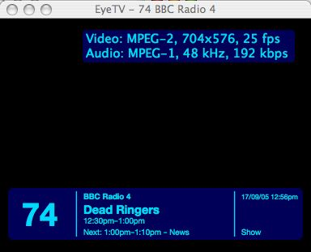

| Jim's Site | |

Last Updated: Fri Oct 07 22:41:49 BST 2005

Platform: Elgato EyeTV 1.8.2 / Apple Mac OS X 10.4.2
NOTE: EyeTV 1.8.3 now includes support for audio only channels.
I recently bought an Elgato EyeTV for DTT to turn my Apple PowerBook into a PVR device.
I was quite pleased with it, except for the fact that by default it didn't receive the audio only channels (such as BBC7).
Fortunately there is a way to enable this (although not through the graphical UI). To enable the receiving of audio only channels type this into a terminal:
defaults write com.elgato.eyetv "Add Audio-Only Services" -bool true
Then restart the EyeTV application, and re-scan for available channels.
All information on this site is copyright © 1994-2020 Jim Randell